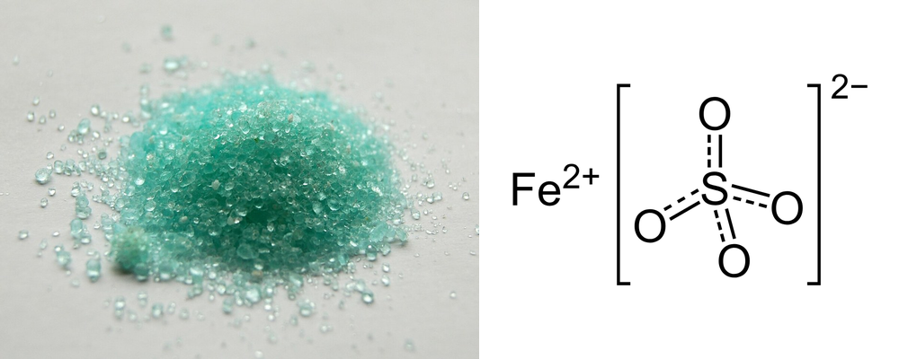

황산철(Ⅱ) (Iron(II) Sulfate)
검수 완료

쉽게 풀면
황산철(Ⅱ)은 철 원자가 2가(Fe2+) 상태로 황산 이온과 결합한 화합물로, 흔히 볼 수 있는 7수화물(FeSO4·7H2O)은 연한 청록색 결정으로 존재한다. 물에 녹으면 옅은 녹색을 띠는 수용액이 되지만, 공기 중 산소와 서서히 반응해 3가 철(Fe3+)로 산화되면서 갈색으로 변색되는 특징이 있다. 이 때문에 신선한 시약을 사용하는 것이 중요하며, 산화되기 쉬운 성질 자체가 여러 산화환원 실험에서 유용하게 활용된다. 예로부터 녹반이라는 이름으로도 불려온 친숙한 화합물이다.
왜 중요한가
황산철(Ⅱ)은 환원력을 가진 대표적인 2가 철염으로, 과망가니즈산칼륨과 같은 산화제 표준용액의 정확한 농도를 정하는 산화환원 적정 실험에서 표준시약으로 널리 쓰인다. 또한 철 결핍 연구나 수질 처리에서 환원제로 활용되며, 산화-환원 반응의 원리를 보여주는 교육용 실험에서도 자주 등장한다. 철 결핍성 빈혈 연구나 식품의 철 강화 실험에서도 흡수가 잘 되는 철 공급원으로 다뤄져, 분석화학뿐 아니라 영양학 실험에도 등장하는 시약이다. 잉크 제조나 목재 방부 처리 같은 전통적인 산업 용도로도 오래 쓰여 왔다.
무엇이고 어디서 작용하나
황산철(II)은 FeSO₄·xH₂O로 쓰는 철(II)과 황산 이온의 염 무리이다. 가장 흔한 형태는 청록색 칠수화물(FeSO₄·7H₂O, 광물 멜란테라이트)이다. 무수물은 흰색, 일수화물은 흰 노란색이고 칠수화물은 조해성이 있다. 물에 녹으면 상자성의 [Fe(H₂O)₆]²⁺ 이온을 낸다. 무수물·일수화물·칠수화물 모두 물 100 g에 약 29.5 g이 녹는다.
주요 기능과 기전
의약품으로는 철 결핍을 치료하거나 예방하는 데 쓰이며 세계보건기구 필수 의약품 목록에 올라 있다. 가장 흔하고 잘 연구된 가용성 경구 철염이다. 공업에서는 주로 다른 철 화합물의 전구체이고, 시멘트 속 크로뮴산염을 독성이 낮은 Cr(III)로 바꾸는 환원제이다. 알칼리 토양의 pH를 낮추고 철 결핍 황화를 치료하는 데도 쓰며, 철 오배자 잉크, 염료 고정, 가죽 흑색화에도 쓰였다. 가열하면 물을 잃고 무수물이 약 680°C부터 SO₂와 SO₃로 분해되어 붉은 갈색 Fe₂O₃가 남는다.
연구에서 다루는 방식
경구 투여의 흔한 부작용은 설사, 변비, 명치 불편이고 용량에 비례한다. 식사 뒤에 먹으면 부작용은 줄지만 흡수도 줄어든다. 대변이 검게 변할 수 있는데 해롭지 않지만 미리 알려야 한다. 철(III)-수산화물 폴리말토오스 복합체나 철 비스글리시네이트 킬레이트보다 이상 반응이 더 흔하다. 비타민 C는 비헴철의 흡수를 높이지만 임상적으로 의미가 크지 않다고 한다. 철 과다 복용은 6세 미만 어린이의 독성 물질로 인한 주요 사망 원인 중 하나이다. 쥐에서 경구 LD₅₀는 319 mg/kg이고, GHS 경고 문구는 삼키면 해로움(H302), 피부 자극(H315), 심한 눈 자극(H319)이다. 임신부와 영아에서 간헐적 경구 철 보충이 매일 보충과 비슷하고 부작용이 적다는 잠정적 근거가 있다.
논문에서는 이렇게 쓰입니다
실제 논문에서
국내 학술지 논문에서 이 용어가 쓰인 문장을 그대로 옮겼다. 제목·학술지·연도와 원문 링크를 함께 적었다.
“조성이 서로 다른 백자토,청자토, 백조합토의 소지위에 황산철(FeSO4·7H2O) 용액을 이용하여 코팅 하였다.”
황산철(FeSO4·7H2O) 용액을 이용한 시유방법에 따른 소지의 발색 연구, 한국과학예술융합학회, 2014 · KCI 한국학술지인용색인 · 원문 보기 ↗
“매염온도는 황산구리, 명반, 소석회 매염의 경우 70-80℃에서 L값이 낮고, △E값이 상대적으로 높았으나 황산철과 사과식초 매염처리구는 온도의 영향을 받지 않았다.”
아프리칸매리골드 추출물에 의한 자연염색시 매염조건에 따른 견직물의 염색성, 화훼연구, 2004 · KCI 한국학술지인용색인 · 원문 보기 ↗
“본 연구에서는 환원제로 황산철을 사용하여 알칼리성 시멘트 내 Cr(VI)의 환원 거동을 조사하였으며, 특히 투입량에 따른 영향과 환원 효율에 중점을 두었다.”
황산철을 이용한 알칼리계 시멘트 내 6가 크롬의 환원 거동, 자원리싸이클링, 2026 · KCI 한국학술지인용색인 · 원문 보기 ↗
예시 문장
아래 예문은 용어의 쓰임을 보이려고 만든 것으로, 실제 논문 문장이 아니다.
철염을 기준 물질로 삼아 산화제 용액의 농도를 정확히 맞췄다는 뜻이다.
철 이온이 시간이 지나면서 얼마나 산화되는지 색 변화로 관찰했다는 의미이다.
조금 더 깊게 보면
산화환원 적정에서 Fe2+는 MnO4-와 정량적으로 반응하여 Fe3+로 산화되고 망가니즈는 환원되는데, 이 반응의 화학양론비를 이용해 미지 용액의 농도를 계산한다. 시약은 공기와 접촉하면 서서히 산화되므로 밀폐 용기에 보관하고, 정밀한 실험에는 갓 조제한 용액을 사용하는 것이 바람직하다. 녹반이라는 옛 이름은 결정이 반투명한 청록빛을 띠는 데서 유래했으며, 예로부터 잉크나 염료의 색을 고착시키는 매염제로도 쓰여 철 화합물의 실용적 역사를 보여준다.
주의할 점
눈과 피부에 자극을 줄 수 있어 보호장비를 착용해야 하며, 강산화제(과망가니즈산칼륨, 다이크로뮴산칼륨 등)와는 반응성이 크므로 계량된 양만 신중히 혼합해야 한다.
참고 문헌
- Wikipedia contributors. (n.d.). Iron(II) sulfate. Wikipedia.
- Wikipedia contributors. (n.d.). Iron supplement. Wikipedia.